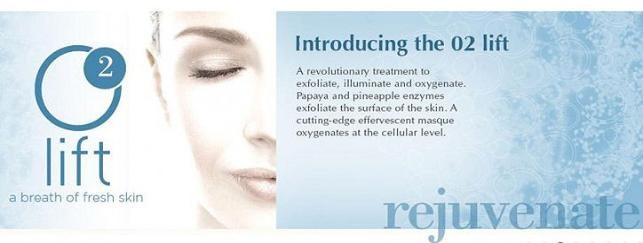

This treatment is known by celebrities as ‘Red Carpet Ready’ facial lift.
It is a revolutionary facial treatment which works on all skin types by exfoliating, oxygenating, and illuminating the skin.
It delivers an infusion of oxygen, plant-derived stem cells, peptides, and
enzymatic botanicals into the skin.
This powerful trifecta of an enzymatic peel, oxygenating masque, and stem-cells work together to exfoliate, boost circulation, and deliver
high doses of vitamins and stem-cells into the deeper layers of the skin.
Dermaplaning is another procedure loved by celebrities and models. It is an effective and safe exfoliation procedure which uses a surgical scalpel to shave the surface of the skin to remove excess dead skin and peach fuzz hairs. Dermaplaning leaves your skin feeling smooth, while also removing the fine facial hairs which trap dirt and oil in your skin. This procedure also reduces the appearance of acne scars and fine lines. This procedure can be performed every 3-4 weeks after a full skin rejuvenation cycle.